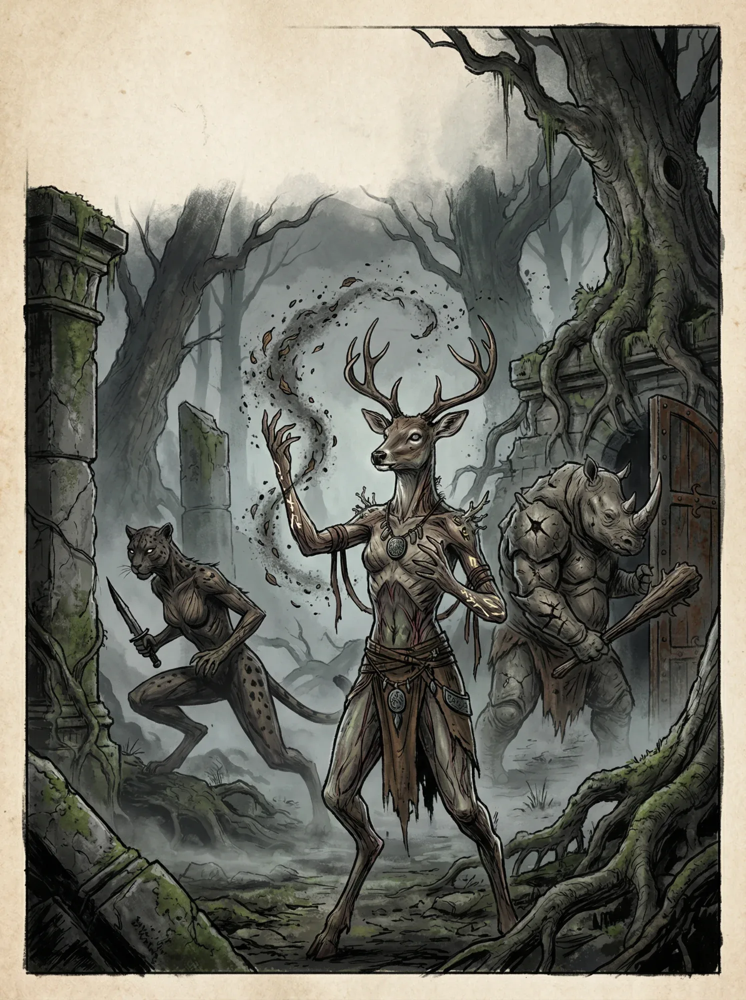

Dryad
Árvore e carne entrelaçadas.
Seres humanoides com pele de casca, sangue de seiva e olhos que refletem a floresta. Tem profunda ligação com a natureza, apesar de se afastarem cada vez mais de suas essências. São seres universalmente gostados entre quase todas as raças, buscando a preservação do ciclo natural.
Perícias de Raça
Sobrevivência
Características de Raça
Pele de Casca
Você recebe 2 de Armadura (Ar) Natural.
Essência da Folha
Ao estar em combate, você recupera 1d4 de Saúde por turno se estiver exposto ao sol.
Amado
- Você pode tentar encantar uma criatura com sua aparência eloquente. Como 1 ação, uma criatura em até 9m deve fazer um teste de Vontade contra sua CD ou fica Enfeitiçada.
- A criatura fica enfeitiçada até passar no teste de Vontade no final de cada turno dela ou você atacar ela.
- Grutos tem vantagem no teste de resistência dessa característica.
- Você tem +2 em interação social(qualquer) contra criaturas que gostam de você.
Relações Sociais
Os Dryads são um povo apreciado por outros pela impressionante paz de espírito e bom caráter. Por isso, dificilmente se encontra um Dryad amargurado ou triste com a vida. A única raça que geralmente tendem a desprezar os Dryads são os Grutos.
Subespécie
Dryads diferem entre 2 famílias principais:
Florescura
Guardiões da magia antiga. Você segue o legado dos seus ancestrais, louvando o éter a todo custo. Os Florescura protegem a magia e, como consequência de sua linhagem, você é familiar ao místico.
- Você é treinado em Místico.
- Você pode conjurar uma ilusão menor naturalmente como 2 ações, sem foco. (um som baixo, cheiro fraco ou uma luz pequena)
- Escolha 1 magia de nível 1, você pode usá-la sem um foco.
Cascaferro
Protetores da fauna selvagem. Desde pequeno, você esteve conectado à natureza e aprendeu a proteger os menores e necessitados. Você faz parte de uma linhagem que preserva o ciclo natural das plantas e dos animais.
- Você é treinado em Movimento.
- Você é treinado em Armas Marciais.
- +1 Armadura (Ar) Natural e +1 Evasão.
- Animais são naturalmente amigáveis em relação a você.